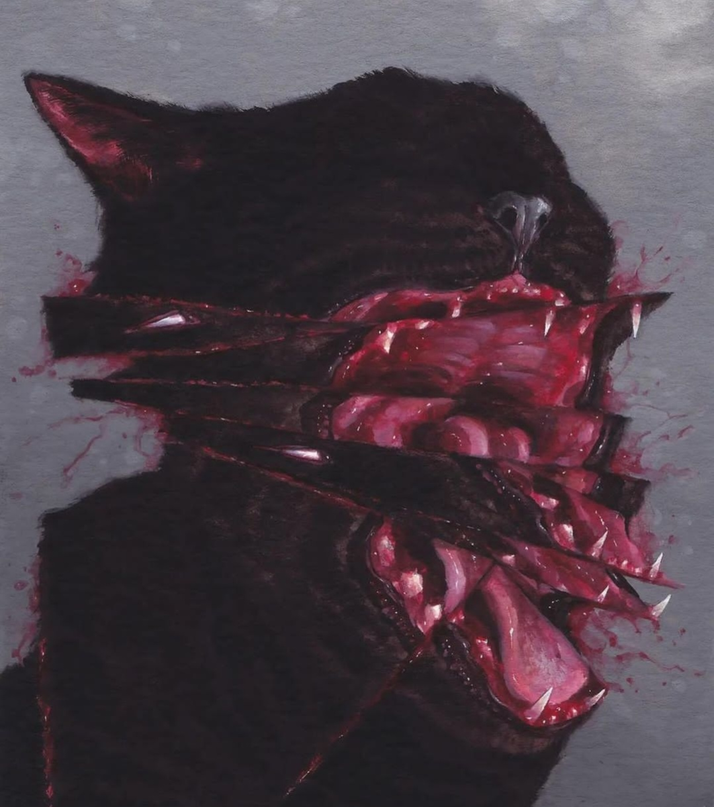

Soy un programador eficiente que maneja muchos tipos de lenguajes tanto tipados y no tipados, me destaco por la habilidad que tengo en mi profesión para desarrollar webs, aplicaciones de celular o de escritorio.

J’ai tous les ragoûts d’un être humain, chair, sang, peau, poils. Plus je n’ai pas une seule émotion reconnaissable autre que la cupidité et le dégoût; quelque chose d’horrible se passe en moi et je ne sais pas pourquoi. Je me sens mortel au point de la frénésie. Je crois que mon masque de raison disparaîtra bientôt.
-Anderson
Mis Proyectos
Proyecto 1
Es crucial que el usuario se enfoque en el proceso, no por conveniencia, sino por la pasión de crear. Que rechace lo superficial y abrace los desafíos, pues es en la dificultad donde se forja la excelencia. Que no se distraiga con placeres efímeros, sino que persista en la búsqueda de soluciones significativas. El esfuerzo, aunque doloroso, es el camino hacia la verdadera satisfacción. Añadiendo que el verdadero placer proviene de la perseverancia y la creacion de logros.
Proyecto 2
Es vital que el cliente se comprometa con el proceso, no por simple interés, sino por la determinación de alcanzar algo extraordinario. Que no se conforme con lo fácil, sino que busque superar los límites, pues es en la adversidad donde se encuentra la verdadera innovación. Que no permita que las distracciones lo alejen de su objetivo, ya que el verdadero placer reside en la perseverancia y en la creación de algo que perdure. El esfuerzo, aunque arduo, es la esencia del logro.
Proyecto 3
Es esencial que el usuario se sumerja en el proceso con dedicación, no por obligación, sino por la convicción de que el trabajo arduo lleva a resultados excepcionales. Que no tema enfrentar lo complejo, pues es en los retos donde se encuentra la verdadera maestría. Que rechace lo trivial y se enfoque en lo que realmente importa, sin dejarse llevar por comodidades pasajeras. El dolor del esfuerzo es, al final, la semilla del éxito y la satisfacción duradera.
Proyecto 4
Es clave que el cliente se involucre profundamente en el proceso, no por simple curiosidad, sino por la pasión de construir algo significativo. Que no evite los obstáculos, sino que los vea como oportunidades para crecer y mejorar. Que no se distraiga con lo inmediato, sino que mantenga su mirada en el horizonte, donde yace el verdadero valor de su trabajo. El esfuerzo, aunque desafiante, es el puente hacia la realización y el orgullo de haber creado algo único.